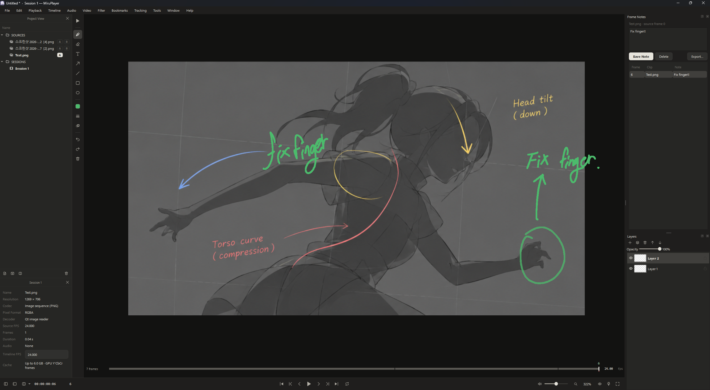

프레임 단위 정밀 검토
그리고 2D 애니메이션
CHARONOS는 애니메이터를 위한 프레임 정확도 영상 리뷰 및 2D 애니메이션 도구입니다. 영상을 프레임 단위로 넘겨보고, 그 위에 그림을 그리고, 두 소스를 나란히 놓고 비교하세요.

CHARONOS가 할 수 있는 것
프레임 정확도 재생부터 드로잉, 비교, 트래킹, 내보내기까지. 애니메이션 리뷰에 필요한 걸 한 앱에 담았습니다.
Frame-Accurate Navigation
영상과 이미지 시퀀스를 프레임 단위로 재생, 탐색하세요. 개별 프레임을 정밀하게 넘겨보고 타이밍, 모션, 디테일을 확인할 수 있습니다.
A/B Comparison
두 개의 비디오 또는 이미지 소스를 동시에 비교하세요.
- Side-by-side
- Top-and-bottom split
- Wipe
- Overlay
타임코드 또는 프레임 기반으로 소스를 동기화합니다.
Screen Annotation
뷰포트 위에 직접 그리며 아이디어와 피드백을 시각적으로 전달하세요.
- Freehand pen
- Shapes
- Arrows
- Text
Motion Tracking
뷰포트 안의 오브젝트를 트래킹해 이동 경로를 기록하세요. 프레임별 위치 변화와 모션 궤적을 분석할 수 있습니다.
Review & Analysis Tools
애니메이션 시퀀스와 비주얼 디테일을 더 깊이 살펴보세요.
- Frame-specific notes
- Bookmarks
- Onion Skin
- Grid overlays
- Video analysis filters
Export
어노테이션이 적용된 스틸 이미지, 리뷰 영상, 이미지 시퀀스를 내보내세요. 피드백 공유와 후속 작업에 활용할 수 있습니다.
Project Management
비디오/이미지 소스, 타임라인, 어노테이션, 리뷰 정보를 하나의 프로젝트로 관리하세요. 저장하고 다시 열어서 작업을 이어갈 수 있습니다.
Video Downloader
yt-dlp 연동으로 YouTube 등 다양한 플랫폼의 영상을 바로 가져오세요. URL만 붙여넣으면 소스를 프로젝트로 불러옵니다.
단순한 영상 플레이어가 아닙니다.
CHARONOS는 애니메이터, 아티스트, 영상 전문가를 위한 리뷰 및 분석 환경을 만드는 것이 목표입니다. 실제 애니메이션 제작과 리뷰 과정에서 마주치는 실질적인 필요에서 출발합니다.
커뮤니티 피드백은 프로젝트의 방향을 shaping하는 데 중요한 역할을 합니다.
- 기능 확장
- 사용성과 성능 개선
- 다른 크리에이티브 앱과의 상호운용성 강화
- 더 많은 애니메이션/영상 제작 워크플로우 지원
- 커뮤니티 피드백 반영
CHARONOS 다운로드
Windows 10/11 x64 · 네이티브 C++20 / Qt 6 · FFmpeg 디코딩
GitHub Releases에서 다운로드License
CHARONOS는 MIT License로 배포됩니다. 다음을 자유롭게 할 수 있습니다.
- 개인 또는 상업적 목적으로 사용
- 소스 코드 수정
- 원본 또는 수정 버전 배포
- 다른 프로젝트에 포함
CHARONOS는 제가 애니메이션을 만들면서 항상 쓰고 싶었던 도구를 만드는 데서 시작했습니다. 이 프로젝트가 저뿐만 아니라 다른 아티스트, 애니메이터, 크리에이터에게도 쓸모 있는 것이 되었으면 합니다.
CHARONOS를 봐주셔서 감사합니다. 더 나은 크리에이티브 워크플로우를 함께 만들어갑시다.